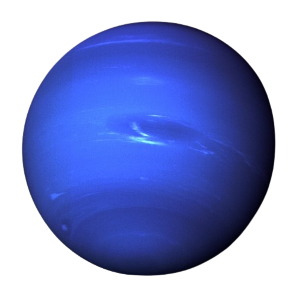

Neptuno es oscuro, frío y muy ventoso. Es el último de los planetas de nuestro sistema solar. Está más de 30 veces más lejos del Sol que la Tierra. Neptuno es muy parecido a Urano. Está compuesto de una espesa mezcla de agua, amoniaco y metano sobre un centro sólido del tamaño de la Tierra. Su atmósfera se compone de hidrógeno, helio y metano. El metano le da a Neptuno el mismo color azul de Urano. Neptuno tiene seis anillos que no se ven fácilmente.
